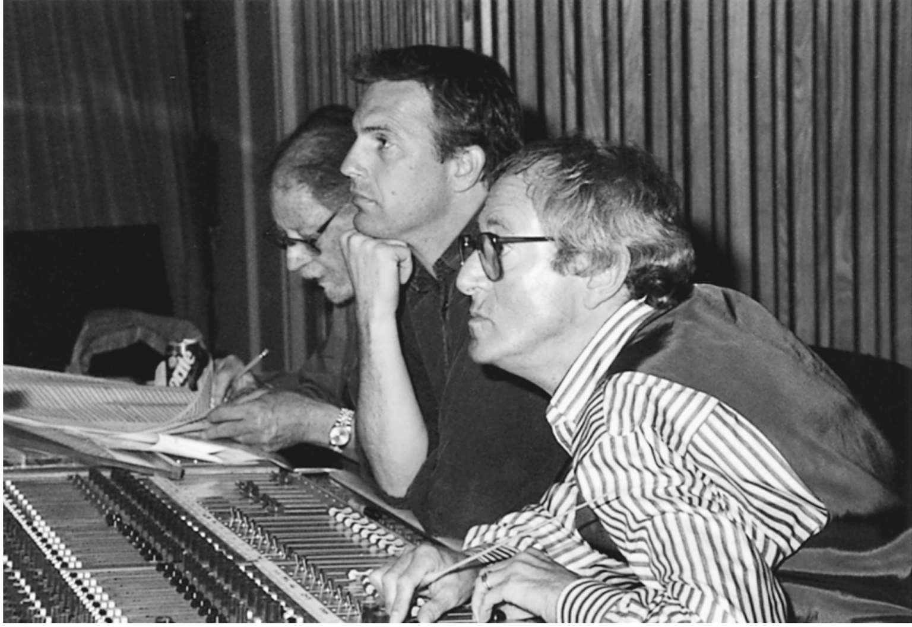
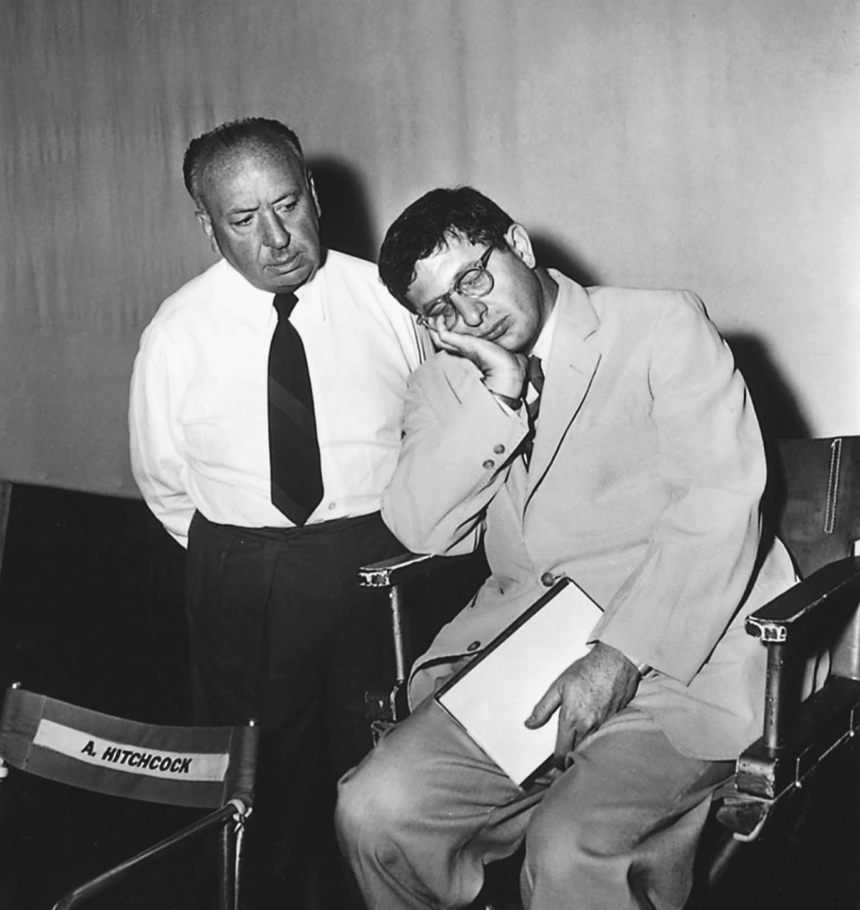
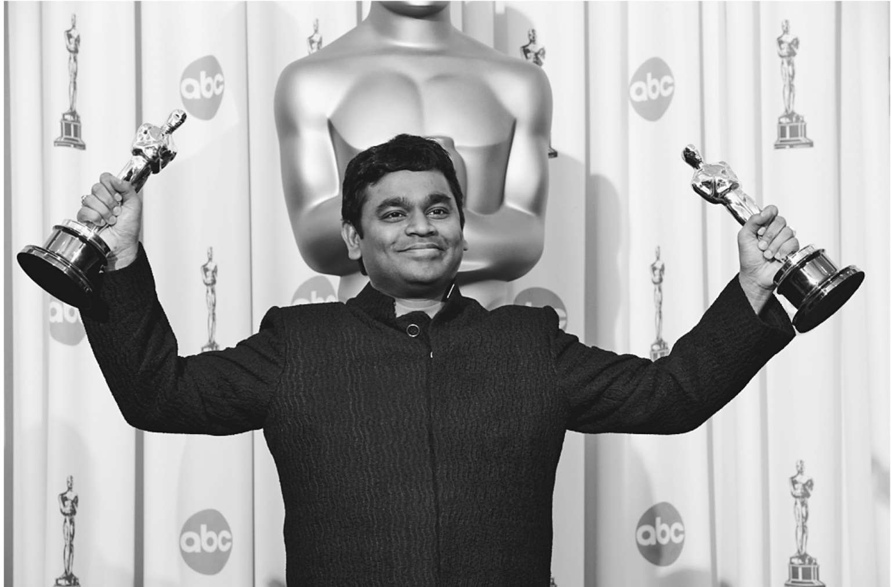

本章讨论的是电影作曲家，也就是那些为电影创作配乐的人，这里所说的配乐是我们在电影的背景中听到的原创音乐。流行歌曲作者为电影写歌，音乐监制筛选和编辑现成的音乐，但电影作曲家的工作大不相同。这里，我想重点讨论20世纪广为流传的一些著名的电影原创配乐以及它们的作曲者。
电影作曲家们来自哪里？他们是如何为电影创作配乐的？这是一种什么样的过程？在不同的制度、国家和时代，为电影创作配乐会有什么样的区别？在为所有的电影创作配乐时有什么基本问题？在进行电影创作的所有人员中，主要的合作关系是什么？作曲家又是其中的哪个环节？哪些作曲家同导演建立了合作关系？哪些作曲家在团队中行使了控制权？本章对以上问题做了简要回答，让读者对电影作曲家们的一些个性特征和该职业的流程有更全面的认识。
电影作曲家们来自与音乐相关的各行各业：音乐厅——德米特里·肖斯塔科维奇、谢尔盖·普罗科菲耶夫、亚伦·科普兰、拉尔夫·沃恩·威廉姆斯、武满彻、谭盾、菲利普·格拉斯和约翰·科里利亚诺；歌剧院——埃里克·沃尔夫冈 · 康戈尔德和理查德·哈格曼；百老汇——马克斯·斯坦纳和阿尔弗雷德·纽曼；演出业——拉维·香卡、维克多·杨和迈尔斯·戴维斯；电视业——亨利·曼西尼和昆西·琼斯；广告业——A.R. 拉曼；摇滚音乐界——彼得·盖布瑞尔、丹尼·艾夫曼、坂本龙一、乔尼·格林伍德、平克·弗洛伊德乐队、橘梦乐团和波波尔·乌乐队。电影作曲家们可以有单一的职业，也可以在进行以上各种音乐活动的同时为电影创作配乐。作曲家们有时痛苦地抱怨为电影创作配乐时所受的限制；另一些人却感觉非常自由，他们常常改编电影音乐，以便在音乐厅演奏（武满彻会将电影音乐拿到音乐厅演出），反之亦然（格林伍德会将在音乐厅演奏的乐曲改编成电影音乐）；而对于有些人来说，电影音乐作曲甚至可能拯救了他们的人生（康戈尔德、普罗科菲耶夫、肖斯塔科维奇）。
电影配乐创作的过程取决于几个因素：制度上的实践和权力的分布状况（像好莱坞那样的大制片厂制度，作曲家是生产流水线上的一个环节；而在宝莱坞，音乐监制在创作配乐时有很大的自由，很多人享有很高的声誉）；一部特定影片中电影人之间的工作关系（导演和作曲家之间长期的合作关系，例如史蒂文·斯皮尔伯格和约翰·威廉姆斯，或者赖纳·维尔纳·法斯宾德和佩尔·拉本）；导演的权力和其对安排电影配乐的兴趣（少数导演会积极掌控电影中的配乐创作，例如黑泽明、约翰·福特、让—吕克·戈达尔和王家卫）；作曲家的个性特征和癖好（例如，众所周知，伯纳德·赫尔曼容易动怒，他坚持“只有我才能决定我的音乐；否则我就不为电影作曲”）。
电影配乐创作的核心问题
电影配乐的创作中有一系列核心问题为世界各地的作曲家们所公认。虽然不同的作曲家有非常不同的应对方法，但问题本身惊人地相似。它们中的第一个问题就是何时何处开始创作过程。有些作曲家喜欢通过阅读电影脚本来获得灵感。加布里埃尔·亚里德就是如此，若看不到脚本他是不会接手的。在他与让—雅克·贝奈克斯合作的过程中，亚里德阅读电影脚本，并与贝奈克斯进行讨论，在电影拍摄之前还要同演员见面。亚里德会在电影拍摄之前完成大部分的配乐创作，这样贝奈克斯就可以在拍摄现场播放亚里德的音乐。武满彻在接手工作之前也会阅读电影脚本，而且他希望尽可能早地去到电影制片厂，在拍摄过程中常常光顾现场。艾夫曼也喜欢在拍摄时光顾现场，并且，在他看来，《蝙蝠侠》（1989）的拍摄现场为他创作影片主题曲带来了灵感。刘庄喜欢读电影脚本，并且到拍摄现场去找感觉。因为凌子风的《边城》（1984），她走访了湘西一带，研究了当地民乐，并在电影配乐中运用了这一元素。谭盾说，他和李安早在电影《卧虎藏龙》（2000）开拍之前四年就开始讨论影片的配乐了。
然而，还是会有例外的。好莱坞和世界上大部分的电影界标准的工作程序是，在电影拍摄完成之后聘请作曲家。（动画片的工作程序通常是颠倒的：为了实现复杂的声画协调，在动画画家开始工作之前，作曲家就会创作配乐。）很多作曲家都喜欢这种方式。斯坦纳曾调侃道：“我从不读电影脚本。要是看见电影脚本，我一定跑得远远的。”赫尔曼声称他“在为希区柯克的电影创作配乐时从不看电影脚本……你从来无法提前知晓他对音乐的需求”。就连刘庄也是等到影片剪辑完成之后才真正开始创作配乐：“你知道吗？即使电影脚本［说］这儿、这儿或这儿应该有音乐，在电影拍摄时也总会变。”正如莫里斯·贾尔发现的那样，提前创作配乐不仅艰难，而且有时是在做无用功。贾尔在为影片《蚊子海岸》（1986）创作配乐时，为了让导演彼得·威尔可以在拍摄现场播放音乐而提前完成了创作。威尔的确在拍摄时播放了贾尔的音乐，但在电影最终完成之后又做了改变。贾尔解释说，在拍摄过程中，威尔对音乐的理解变化很大，因此，贾尔无法使用提前创作好的配乐，而不得不在影片发行时全部重新创作。
大部分作曲家第一次观看影片，都是影片的粗略剪辑版，也就是影片最初的临时剪辑版本。这一做法令作曲家们对电影的结局可以做出反应，但同时也让他们受到了巨大的时间限制。好莱坞传统的制片厂制度一般给作曲家们大约三到六周的时间，当然，有些声誉高的作曲家会享有特权，可以要求更多的时间，例如康戈尔德。大体上，这一时间范围是不变的。莫里康内，世界上最受欢迎的电影作曲家之一，一般需要一个月的创作时间。A. R. 拉曼用三周的时间完成了《贫民窟的百万富翁》（2008）的配乐创作。亚里德有八个月的时间来创作《无可救药爱上你》（2002）的配乐，只是因为他在有机会看到影片之前就开始了创作。
对大多数作曲家来说，配乐创作始于对电影的观看，也就是初步剪辑版的放映，这样可以判断哪些场景需要音乐以及需要的数量。约翰·巴里说：“影片中哪些地方需要音乐是你所做的最重要的决定。”他又说：“百分之九十的时间里，这些选择非常清晰，而且你和导演意见一致。”总的来说，音乐定位的工作由导演、作曲家和音乐编辑来完成，具体由谁来决定，取决于导演的权力（或者说其对配乐的关注程度）、作曲家表达自己选择的能力（正如莫里康内微妙地指出，“有时……导演会显示自己的权威……破坏作曲家的权威”）和各方之间的关系。
有些导演会自己定位音乐，他们中的不少人相当有技巧。《贫民窟的百万富翁》的导演丹尼·博伊尔就是自己为影片定位音乐的。拉曼会为每一处创作四到五段不同的音乐，并通过电子邮件发给博伊尔，以便他选出喜欢的音乐。拉曼习惯了宝莱坞的工作模式，在那里是由音乐监制的助手给影片“打分”（作曲家说了算），“那是一个完全不同的工作模式”。虽然因为这部影片，拉曼获得了两项奥斯卡奖，但他仍然说：“那样挺好。”
今天，在西方和世界上的很多地方，导演是原创配乐创作的核心人物。作曲家的工作是努力实现导演的想法。这可不总是一件容易的事，尤其在倾向于视觉导向的导演想用音乐传递信息时。当然，通过充分协作，这总是可以实现的。凯文·科斯特纳谈到与约翰·巴里在《与狼共舞》（1990）中的合作时说：“我们并不是操着完全相同的语言……［但］他总是能明白我的意思。”有时，合作非常顺利。巴里谈到与科斯特纳的合作时说：“这是凯文第一次当导演，他问了很多问题，我会跟他解释我为什么这么做，为什么那么做，我认为大部分沟通是顺畅的。”
有时则不大顺利。然而，作曲家的创作一旦奏效，也会具有启发性。保罗·托马斯·安德森谈到《血色将至》（2007）时说：“制作电影时，最大的合作者就是作曲家。乔尼［·格林伍德］真的是这部电影最早的观众之一。当他带着一堆音乐回来时，我真的看到了他对这部电影的印象。那简直太棒了，因为我完全没有印象。”

图8 作曲家约翰·巴里（右）和导演凯文·科斯特纳（中）在《与狼共舞》（1990）的配乐会议上
一些制度上的实践，如好莱坞制片厂制度在其鼎盛时期，会剥夺导演在指挥链中的权力。电影制片人、制片厂音乐部门的负责人，或者甚至是制片厂负责人都对配乐的创作有一定的影响力。直到1937年，得到奥斯卡奖的都不是作曲家，而是制片厂音乐部门的负责人。好莱坞制片人不懂音乐的故事相当具有传奇色彩：想使配乐“法国化”的制片人，增加了法国号；抑或是想让配乐听起来有勃拉姆斯感觉的制片人，想请勃拉姆斯飞到好莱坞来担任指挥；还有想要俄式配乐的制片人，当听到配乐时，虽然是倒播，他仍然很满意。大卫·拉克辛讲述了一个故事，是关于声称喜欢阿尔班·贝尔格的歌剧《沃采克》的一位制片人，他想让配乐有那样的感觉，然而，当拉克辛用留声机播放《沃采克》时，那位制片人却问他在放什么“狗屎”。米克罗斯·罗兹萨记得有一位制片人规定“女主角的音乐用大调，男主角的音乐用小调，当他们两人在一起时，音乐应该是大调和小调合奏”。这位制片人很可能指的不是多调性。然而，不懂音乐这96一情况并非为好莱坞制片人所独有。香卡·因多卡讲述了他在宝莱坞一个录音棚的经历：“我们当时演奏的歌曲……调号是两个降号，但对歌手来说太高。所以，［编曲人］说：‘我们得加一个降号。’于是，得知我们用的是两个降号后，音乐监制说：‘好的，再加一个降号。’”
在好莱坞制片厂制度中，有些制片人和很多制片厂负责人掌握很大的权力。（直到今天，电影配乐的所有者是制片厂，而不是作曲家。）20世纪福克斯电影公司的达里尔·F·扎努克定制的新音乐，在约翰·福特的影片《侠骨柔情》（1946）试映之后被加进影片。大卫·O. 塞尔兹尼克著名的、冗长的备忘录中有作曲家应当遵循的关于音乐的复杂记录。当弗朗茨·沃克斯曼为希区柯克的影片《蝴蝶梦》（1940）创作配乐而遇到问题时，他给塞尔兹尼克去信询问，随后，塞尔兹尼克为他的配乐加入了斯坦纳创作的音乐提示。罗兹萨谈到为《爱德华大夫》（1945）创作配乐的经历时说，他只见过希区柯克两次，抱怨自己被“著名的塞尔兹尼克备忘录狂轰滥炸，该备忘录实际上是在告诉他如何作曲，以及如何为一个个场景编写管弦乐曲”。罗兹萨可能对导演的介入反应过激，他声称如果导演给出的信息有价值，他愿意听，但“如果他们的建议很愚蠢，我会拒绝的”。约翰·科里利亚诺从音乐厅来到放映厅，为少数影片创作过配乐，他承认电影作曲家就是个“雇员”。对他来说，那是最困难的部分：“你有一份工作，但你必须取悦他人。另外，你也得取悦自己。那就是作为作曲家，你不得不维持的平衡——取悦你自己的同时，还得满足导演和制片人的要求。”
但是，不止好莱坞制片厂制度会限制作曲家的权力。某些电影业甚至找到了确保成功的音乐模式。北印度电影业、波斯语电影业、埃及电影业与尼日利亚电影业对音乐的种类和数量都有特定的要求。北印度第一部没有歌舞的影片《穆纳》（1954）在票房上表现不佳。尽管作曲家有可能规避这些期望值，但也不是件容易的事。比起昔日的制片厂负责人，现今的商业压力——在电影中加入吸引特定观众群体的一首流行歌曲，将电影配乐制成原声专辑销售——才是更加强大的决定因素。莫里康内描述为“压力很大”，创作配乐的时候“要尽可能吸引人——旋律优美、朗朗上口，以便获得大多数观众的青睐”。
合 作
无论如何，在电影史上，一些导演的确对他们影片中的配乐起了关键作用。实际上，他们中的一些人还自己创作配乐。D.W.格里菲斯与卡尔·布赖尔合作，为格里菲斯的电影《一个国家的诞生》（1915）创作配乐，据说创作了该影片的爱情主题曲。无声电影的先锋经典力作《疯狂的一页》（1927）的导演衣笠贞之助在影片于1994年代重回银幕时，自己创作了配乐。为影片创作过配乐的其他导演有：查理·卓别林（他让管弦乐演奏家和编曲人帮他实现他的音乐想象）、约翰·卡朋特和克林特·伊斯特伍德。
萨蒂亚吉特·雷伊可能是电影配乐经历最广泛的导演了，他不仅为自己的许多影片创作配乐，还为其他导演的好几部影片创作配乐。雷伊同他早期影片配乐的作曲家们——拉维·香卡、阿里·阿卡巴·汗、乌斯塔德·维拉亚特·汗——之间的关系非常紧张，尤其是香卡，他对雷伊不断的介入简直怒发冲冠。对于西方音乐，雷伊知识广泛，鉴赏独到，他希望运用到自己的电影中去。后来他声称，西方艺术音乐形式，例如奏鸣曲，对他的影片结构影响很大；而印度音乐以它不确定的时间感，冲击了整个电影业的构造。
雷伊发现同作曲家们的沟通没有效果，自己创作配乐更加简单。他没有受过什么正式的音乐训练，却承担起作曲、管弦乐编曲，甚至是指挥的工作。因为履行了导演和作曲家两种角色，雷伊赢得了独特的地位。他会在写电影剧本的同时构思主要的音乐创意，开始作曲，然后在制作影片的过程中推动这些创意的发展。雷伊首先用口哨吹出乐曲，然后在钢琴上奏出曲调，用西方记谱法将其标记出来。雷伊在1950年代晚期开始创作自己的电影配乐，并在后来的职业生涯中一直坚持这么做。
其他导演也对自己电影中的配乐产生了决定性影响。约翰·福特为自己的西部片选歌：标志性的民间曲调、不同时期的歌曲以及赞美诗，电影原声带上都有。福特的美国历史学得很好，他非常了解不同时期的音乐，甚至往往在确定电影作曲家之前，他就能为电影选好音乐。这样一来，一些作曲家的处境就非常尴尬，他们不得不询问福特选择了哪些歌曲作为电影的配乐。（但是，我们也看到，有时即便是福特的选择也会被更改。）
黑泽明对音乐也有非常明确的想法。他居然给自己的作曲家们提供可资借鉴的音乐模式：《罗生门》（1950）中拉威尔的波列罗舞曲，《用心棒》（1961）和《椿三十郎》（1962）中李斯特的匈牙利狂想曲第二号，《红胡子》（1965）中海顿的第一〇一交响曲（《时钟》）和贝多芬的第九交响曲，《乱》（1985）中马勒的第一交响曲。同黑泽明合作过九部影片的佐藤胜，将黑泽明对电影配乐的兴趣描述为满腔热情。据佐藤胜透露，他们在开拍之前会对影片的音乐进行全面的讨论。然而，黑泽明同作曲家们以及团队中的其他成员时常发生争执。伊福部昭为《静静的决斗》（1949）创作配乐时，黑泽明让他参考胡文蒂诺·罗萨斯的《乘风破浪圆舞曲》；伊福部昭觉得自己在此过程中做出了妥协，99以至于不再愿意同黑泽明合作。武满彻也因为受不了黑泽明的插手而拒绝同他合作。即使是早坂文雄（他的英年早逝令黑泽明极为悲痛），也曾因为被迫模仿拉威尔的波列罗舞曲，而同黑泽明争执过。平心而论，我们应该注意到，黑泽明曾表示，他也并非完全不会让步。当早坂文雄坚持在影片《丑闻》（1950）中使用小号时，黑泽明虽然反对，但他承认早坂文雄是对的。配乐中使用了小号。
让—吕克·戈达尔作为电影制作人当中最不循规蹈矩的一位，对配乐也有同样反传统的想法。他甚至不同作曲家们合作，只以自己认为合适的方式使用作曲家们创作的乐曲。他曾让米歇尔·勒格朗为影片《随心所欲》（1962 ）谱写主题曲和变奏曲，却在后期只用到了十二首变奏曲中的一首，并且在中间的部分骤然停止，缩短了乐曲。
与导演的合作令作曲家处于更加积极的地位。苏联导演谢尔盖·爱森斯坦和作曲家谢尔盖·普罗科菲耶夫之间的关系就是明证。在影片《亚历山大·涅夫斯基》（1938）的拍摄过程中，爱森斯坦从一开始就让普罗科菲耶夫参与其中。普罗科菲耶夫到访片场，定期观看样片。据爱森斯坦说，他们俩会就“‘哪个放在前面’进行长时间的激烈争论”，并决定究竟是音乐还是图像。有时爱森斯坦赢：普罗科菲耶夫会观看爱森斯坦编辑的镜头，而爱森斯坦会试着描述镜头的本质，以便普罗科菲耶夫为其找到对等的音乐。显然，普罗科菲耶夫学得很快。在跟爱森斯坦会面后，他会回家，第二天带来创作好的乐曲。有时普罗科菲耶夫会赢：有些配乐在镜头被编辑好之前就创作出来，甚至完成录制，以便爱森斯坦根据配乐剪辑镜头。
所有以上做法在1938年的苏联都是不同寻常的，在今天也是如此。普罗科菲耶夫对录音很有悟性，在1930年代他就参观过沃尔特·迪士尼的录影棚，见识过最先进的录音技术。当然，1938年苏联录音棚里的技术与迪士尼相差甚远。安德烈·普列文曾说，普罗科菲耶夫为《亚历山大·涅夫斯基》创作的音乐是史上最伟大的电影配乐，被录制出来却是最糟糕的电影原声带。罗素·梅利特形容它听上去好像“通过电话录制的室内乐团演奏”。普罗科菲耶夫让大约二十位音乐家参与录音，尽管如此，他还是尽量采取了一些创新的做法：把乐器放在离麦克风很近的地方来制造失真的音效，以令邪恶的条顿骑士产生眩晕的效果；或者将铜管乐器远离麦克风，以削弱恐怖的联想；或者在创作配乐时将不同乐器的音域用到极致，通过操控它们的声音达到古代乐器的效果。普罗科菲耶夫不喜欢引用古老的音乐——他觉得那对现代听众来说很怪异——他更愿意自己创作具有中世纪风的民间曲调。世界上其他地方还有一些作曲家和导演合作的重要范例，包括法国的亚瑟·霍尼格和阿贝尔·冈斯，莫里斯·乔伯和让·维果，乔治斯·奥里克和让·科克托，皮埃尔·扬森和克劳德·夏布洛尔；苏联的肖斯塔科维奇和格里高利·柯静采夫；日本的早坂文雄和黑泽明、沟口健二；捷克斯洛伐克的瓦茨拉夫·特罗扬和吉力·唐卡；意大利的尼诺·罗塔和费德里科·费里尼，莫里康内和莱昂内；德国的佩尔·拉本和法斯宾德，波波尔·乌和维尔纳·赫尔佐格；中国的赵季平和张艺谋。
像伯纳德·赫尔曼那种完全无视导演想法的作曲家是很少见的。咄咄逼人、固执己见，却极有天分的赫尔曼曾公开表示：
“如果你遵循大部分导演的品位，音乐就会很糟糕。他们其实根本没有品位。当然，我这样说有点儿夸大其词。也有例外的情况……希区柯克很理解人：他不干扰我！”赫尔曼—希区柯克组合在好莱坞家喻户晓，然而由于赫尔曼的特殊癖好，用组合一词形容他们两人的关系似乎不大恰当。希区柯克对音乐有明确的想法，对音乐的定位有较好的直觉，这在他详细记录的“声音笔记”中经常体现出来。通常，他会参与影片配乐的创作，随着事业的蓬勃发展，他越来越深入地插手影片配乐的创作。然而，他却给了赫尔曼足够的空间和充分的信任。在《迷魂记》（1958）中有一场著名的爱情戏，在斯考蒂的幻觉中，朱迪出现在旅馆的房间里，这是一段无对白的延长镜头。希区柯克对赫尔曼解释道：“我们只要摄影机和你。”在《惊魂记》（1960）中，希区柯克决定浴室场景不配音乐。据赫尔曼说，希区柯克曾告诉他：“嗯，你想怎么写就怎么写，但是只有一样请按我说的做：请不要为浴室谋杀场景写配乐。”当然，赫尔曼反其道而行之，为这一段创作出电影史上最引人注目、让人争相模仿的乐曲。
赫尔曼一般从影片开始制作时就参与进来，他在录制前同希区柯克会面，到访拍摄现场，不仅对配乐，而且对影片的其他方面提出建议，并就音乐的安排给出意见。正如我们所见，当他和希区柯克意见相左时，他会无视希区柯克的指令。
合作关系随着时间的推移，开始变味，最终变得恶劣。希区柯克在拍摄《冲破铁幕》（1966）时，受到来自制片厂的压力，不得不使用流行音乐，起初他支持赫尔曼，拒绝与商业压力有任何关系。然而，正如赫尔曼一贯的做法，他无视希区柯克关于音乐的主要指令，只是这一次，希区柯克不再容忍他这样做。赫尔曼在录制了一段配乐之后就被希区柯克毫不客气地解雇了。［希区柯克后来拒绝使用亨利·曼西尼为《狂凶记》（1972）创作的配乐，据传是因为那听起来太像赫尔曼的风格。］希区柯克和赫尔曼这对朋友之间一旦反目，就再也没有和解。1994年代，赫尔曼被新好莱坞电影发掘，他为布莱恩·德·帕尔玛的《迷情记》（1976）创作过配乐，还为马丁·斯科塞斯的《出租车司机》（ 1976）创作过配乐。赫尔曼在指挥完《出租车司机》的当晚去世。希区柯克曾将《惊魂记》所取得的效果中的33%归功于赫尔曼的音乐，而赫尔曼却将这一数据提高到60%。毫无争议的是他们两人合作的质量。在希区柯克九部最著名的影片中，赫尔曼能够用音乐形式表现出希区柯克心中无意识的恐惧和欲望，包括《擒凶记》（1956）、《迷魂记》、《西北偏北》（1959），当然还有《惊魂记》。

图9 作曲家和导演最著名的合作范例之一，就是伯纳德·赫尔曼同阿尔弗雷德·希区柯克之间的合作。这是希区柯克（左）同赫尔曼在影片《擒凶记》（1956）公开拍摄现场的合影
武满彻在好几部影片，包括《乱》（1985）的拍摄过程中试图同黑泽明维持合作关系，但非常困难。作为日本最著名的艺术音乐作曲家，武满彻习惯了对他不加以控制的导演。然而，在影片《电车狂》（1994）中，黑泽明希望武满彻用比才的《阿莱城姑娘》作为原型创作配乐。当武满彻回应，如果黑泽明喜欢比才，他应该雇用比才来创作，黑泽明也许被这突如其来的反抗惊呆了，反而允许武满彻创作原创音乐。为《乱》的战斗场景创作配乐时，黑泽明让武满彻以马勒的第一交响曲作为参照。武满彻对这一选择不认同，但他独辟蹊径，用自己的方式，的确令战斗场景具有马勒第一交响曲的风格，不过却包含了马勒的另一段乐曲《土地之歌》，这是黑泽明没有要求的。如果说黑泽明发现了武满彻的这一做法，他从未对此有过任何评论。但武满彻和黑泽明正是因为这一问题产生分歧，以致分道扬镳。为《八月狂想曲》（1991）创作配乐时，黑泽明希望武满彻用上舒伯特的《野玫瑰》，但武满彻一走了之。影片中确实在显著位置出现了《野玫瑰》的曲调，据说是因为作曲家池边晋一郎更加随和。
临时声轨
在当今的电影制作上，越来越常见的是，作曲家要面对一个临时声轨，也就是从现有的音乐作品中精选一系列音乐片段，并使之与影片大致达到声画同步。如果你最近去电影院看过即将上映的大片的预演，或许听说过临时声轨。故事影片中的临时声轨可以选自流行音乐、艺术音乐或其他电影的配乐。临时声轨是用来提供模型的，最好是情境，为导演和作曲家提供一种听觉交流的形式。它拯救过不止一部影片。电影《毕业生》（1967）的导演迈克·尼科尔斯选择西蒙与加芬克尔用一系列新歌为电影创作配乐，在他看来，他们的音乐正是影片的主角想要听到的。尼科尔斯用临时声轨为影片配了西蒙与加芬克尔几首现有的歌曲。然而，保罗·西蒙在音乐上文思枯竭，当影片编辑完成，准备配上音乐时，他只写出了《罗宾逊太太》的几个小节而已。尼科尔斯深感失望，只好使用了临时声轨，结果大获称赞，取得了商业上巨大的成功。平心而论，西蒙却有不同的说法，他说尼科尔斯因为喜欢临时声轨而拒绝使用自己新写的歌曲。这将不会是第一次。
临时声轨可以是一种约束，令作曲家局限于对特定音乐片段的模仿。最坏的情形是，临时声轨提供的范例与导演脑海中的影片联系得如此紧密，以至于无论作曲家构思出什么样的原创音乐，听上去都不对。《2001太空漫游》（1968）中的临时声轨就是这一约束的最著名实例，斯坦利·库布里克从自己的唱片收藏中为影片精选了包括理查德·施特劳斯有名的《查拉图斯特拉如是说》在内的一系列选段。亚历克斯·诺斯为影片创作了原创配乐，但库布里克觉得更加喜欢临时声轨，他甚至在首次公演之前没和诺斯打声招呼就弃用了诺斯所有的配乐。通过临时声轨，很多艺术音乐被用作电影配乐。例如，塞缪尔·巴伯的《弦乐柔板》被奥利弗·斯通编进了《野战排》（1986）的临时声轨，并最终战胜佐治·狄奈许的原创主题曲，成为影片的配乐。
电影配乐最难定义的部分是作曲。关于如何寻找灵感（或者当他们没有灵感时如何作曲），电影作曲家们有各种说法：从自天而降的灵感闪现到受过训练的精湛技艺。1930年代在宝莱坞工作的阿尼尔·比斯瓦斯曾说：“音乐必须属于时代和［电影的］角色，当我坐下来作曲时，这常常是我灵感的来源。”蕾切尔·波特曼曾这样描述她的体验：“它可以是很不起眼的东西，比如一个四音符的旋律链，或者从一个和弦转到另一个和弦的乐章，你突然感到那就是音乐的灵魂、整部影片的表达方式。”狄奈许的描述不太一样：“事实上，你得逼迫你自己，你得全神贯注，就像运动员一样。那会给你带来灵感。”杰里·戈德史密斯说：“我们希望那全是艺术，但我们也得面对现实，大部分情况下我们还是需要依靠音乐技艺。”据莫里康内自己统计，他已经创作过四百五十多首电影配乐，他认为配乐的创作一半依靠技艺，一半依靠灵感。格拉斯告诫作曲家们不要过于沉浸在电影中：“作曲家们想知道如何写出音乐，如何获得灵感，我告诉他们不要过多考虑电影，他们有点儿吃惊。”
费德里科·费里尼声称自己在同尼诺·罗塔的长期合作中，积极参与配乐创作，他描述自己是如何站在罗塔的钢琴旁，告诉他什么样的音乐正是自己想要的。然而，罗塔却有不同的说法。作为悟性超强、极具天分的即兴创作者，罗塔会提前创作好几首不同的主题曲，并将它们演奏给费里尼听，直到出现他喜欢的那一首，这让费里尼误以为是他在钢琴旁为罗塔带来了灵感。
作曲家们会在书桌、钢琴旁，或者今天的电脑键盘上工作。亚伦·科普兰在电影放映时，用钢琴作曲。有些人，像莫里康内，用五线谱纸和一支铅笔的传统方式作曲；还有些人，像拉曼，在电脑键盘上作曲。有人独自工作，有人喜欢喧闹。他们都处在快速创作的巨大压力之下。
大部分作曲家都能做到，至少在分工明确的大规模生产体系下——例如好莱坞和宝莱坞——工作的作曲家可以。从经典的制片厂时代到现在，好莱坞的作曲家们一般草拟出他们的想法，根据不同的特殊程度同管弦乐演奏家、编曲人以及誊写配乐最终版的抄写员进行合作。这说明，好莱坞作曲家们很少将自己的音乐编成管弦乐曲。（然而，在国际上的电影音乐团体中，作曲家们常常将自己的作品编成管弦乐曲，因此，在进入好莱坞工作后，他们通常不容易适应。）在经典的制片厂时代，一位作曲家同时从事几首配乐的创作或几位作曲家同时创作一首配乐，都是很常见的现象。对于后者，多人创作一首配乐的情况，制片厂通常会在银幕名单上只写一位作曲家的名字。《关山飞渡》（1939）在这方面是个例外，有五位作曲家同时获得银幕上的署名权和当年的奥斯卡奖。然而，至少还有两位作曲家参与了配乐创作，却没能署上名字。
在1990年代电脑配乐制作出现之前的宝莱坞，音乐监制一般有一整班人马来完成管弦乐编曲、复制、指挥甚至背景配乐作曲的工作。事实上，在20世纪末之前，背景配乐的作曲人常常是默默无名的，因此，大家错误地认为音乐监制是一部影片中所有音乐的负责人，不仅限于歌曲。甚至真的有制作配乐的生产线存在。键盘手本尼·罗萨里奥回忆了这一过程：“文森特［·阿尔瓦雷茨］会对影片进行标记，然后阿尼尔［·伯德瓦尔］会就第一个标记写曲，文森特将其复制下来，阿伦随后录制这一段，在他录制的同时，阿尼尔［·伯德瓦尔］会为下一个标记写曲，文森特再次进行复制，阿伦再录制，接着阿尼尔又开始写曲。我107们从不停止。”当然，这意味着在配乐过程中乐手们要随时待命，作曲家们要同他们所依赖的、以这种方式参与的乐手们建立起关系。
电影配乐不是一个人就可以完成的，作曲家们，尤其是在好莱坞工作的作曲家们，都知道如何弥补这一事实。很多作曲家精心制作草稿，不仅包括旋律、和声，而且包括管弦乐编曲提示。例如约翰·巴里用十二音记谱法非常详尽地记录了和声以及乐器，包括标记出所有独奏或独唱的部分。还有人，例如詹姆斯·霍纳，会将几个小节的管弦乐曲完全编好，留给管弦乐编曲家完成整支曲调。还有一些人，与管弦乐编曲家或者编曲人建立长期的合作关系，依靠他们重现作曲家的风格，比如：康戈尔德与雨果·弗雷德霍夫（他自己也成为一位重要的作曲家），迪米特里·迪奥姆金与合唱编曲人杰斯特·海尔斯顿，约翰·威廉姆斯与赫伯特·斯宾塞，艾夫曼与同为欧因哥和波因哥乐队成员的史蒂夫·巴尔泰克。
艾夫曼与巴尔泰克的关系说明了围绕着好莱坞管弦乐编曲挥之不去的焦虑。艾夫曼和巴尔泰克都是电子摇滚乐队欧因哥和波因哥的成员，然而，当艾夫曼在1980年代开始创作电影配乐时，他以经典好莱坞电影配乐的浪漫交响乐风格作曲。他的《蝙蝠侠》（1989）明显有模仿康戈尔德和罗兹萨的痕迹，他也公开承认受到他们的影响。至今为止，艾夫曼的配乐极少以任何持续的方式用到流行音乐，他还曾公开表明对流行配乐的厌恶之情。
艾夫曼一直都是非常坦率地谈及巴尔泰克所做的贡献。在《键盘》中，艾夫曼写道：“我可以写出非常精致的音乐草稿，用十二音、十四音或十六音记谱法，但我要靠我的管弦乐编曲家史蒂夫·巴尔泰克把它用标准的方法记录下来。”巴尔泰克证实艾夫曼“写出了配乐中的每一个音符”，然而他在继续描述艾夫曼108古怪的音乐符号时并没有真正讲清楚，“他认为音乐符号对他来说是个问题，由于……力度标记……他不擅长低音谱号……他使用的不是完全规范的音乐符号，但任何懂音乐符号的人都可以看出他在说什么”。艾夫曼多年以来一直（误）以为自己是个“蜂鸣器”，用业内说法，就是不能真正地谱曲，更不用说编管弦乐曲了，只能将旋律哼唱给懂配乐的人。珍妮特·哈弗雅德认为，艾夫曼在好莱坞的经历揭开了深藏在音乐团体中的对电影配乐的偏见，也就是让电影作曲家们达到音乐厅的标准，仍然沉浸在艺术家个体神圣的创造力及其独特的艺术创作的浪漫主义观念中。
管弦乐编曲家也为电子音乐编曲。音乐设备数字接口被发明之后，作曲家可以创作音序文件，也就是录制数据并创作演奏必需的乐谱。管弦乐编曲家对这些音序文件进行处理。新数码技术至少在这一点上，无法为数码录制的声音创作乐谱。誊写员会被召集来听作曲家的音乐文件，这些文件通常被记录在光盘或MP3播放器中，然后誊写员用传统的方式对其进行转写，也就是在管弦乐编曲家编曲之前，通过耳朵，用传统的音乐符号记录下来。
音乐录制
电影配乐创作的最后一环是录制。很多作曲家喜欢指挥自己的配乐，有些的确有能力办到。然而，这是一项令很多第一次从事电影作曲的人深感害怕的工作。将通常位于管弦乐队背后的大银幕上、指挥能看见的画面同音乐精准同步可不是一件容易的事。在看到画面与对其做出反应之间的感知滞后性，刺激了指挥和乐手精准节拍感辅助手段的发展：节拍音轨 ，通过耳机传送给音乐家们的一种听觉节拍器；孔 和条 体系，就是在胶片的巧妙位置打孔、划线，以便指挥为音画同步的重要时刻做好准备；自由计时 ，用一个大秒表以实现精准度。在好莱坞制片厂制度的全盛时期，制片厂拥有很多大型管弦乐队，同制片厂签约的乐队规模从38到65名乐手不等。如今，制片厂不再奢侈地同这么多音乐家签约，但大制作的影片仍然可以拥有一支大型管弦乐队：《蝙蝠侠》的配乐由110名乐手录制，《与狼共舞》的配乐由95名乐手录制。在宝莱坞，据报道，在《复仇的火焰》（1999）的制片厂有300名音乐家。整个录制过程并非都是用来录制有规范乐谱的配乐，电影音乐常常有很多其他的录制方式。雷伊描述了《大地之歌》（1955）的录制过程：在一个录音棚中，香卡和一小群音乐家花了11个小时一边看电影，一边即兴创作配乐。（香卡记得是四个半小时。）香卡在录制过程中甚至没有看过整部影片。导演路易·马勒让迈尔斯·戴维斯为《通往绞刑架的电梯》（1958）创作配乐，只给了他一个晚上的时间，戴维斯根据马勒提前选出的一系列场景在录音棚中即兴创作配乐。
混音 （录制后调整声音强度）和配音 （在剪辑好的影片中加入各种声轨）通常是作曲家不用参与的环节。如果一段乐曲被删掉，那很有可能是在配音环节。乐曲的最终呈现通常是在剪辑室，对此作曲家是不知情的。“我试图对被剪掉的乐曲保持冷静。”詹姆斯·纽顿·霍华德说。“你要干什么？”伦纳德·伯恩斯坦回忆起自己曾经参加过《码头风云》（1954）的配音会议，当看到他所认为的电影中关键的一段音乐为了配合马龙·白兰度的咕哝声而几乎被剪掉时，他非常惊恐。甚至还有整部配乐被弃用的情形，著名的有赫尔曼为《冲破铁幕》创作的配乐和诺斯为《2001太空漫游》创作的配乐；不太著名的有麦克·唐纳为《绿巨人》（2003）创作的配乐，就在录制前几天唐纳的配乐被撤了下来。
声音制作技术的革新对电影配乐和录制产生了根本的（有人认为是解放性的）影响。如今，理论上来说，在世界上很多地方，一位作曲家几乎可以创作并制作一整首配乐，因此，作曲家不再需要一个包括助理、编曲人和抄写员在内的团队，也不需要音乐家现场演奏声学乐器。在很多电影业中，作曲家拥有电脑技术，这已变得越来越有必要。例如，在宝莱坞，用合成器制作数字化配乐的方式已经如此常见，以至于命名法开始改变，“音乐监制”已被“程序员”这一术语所替代。电影配乐的变化如此之大，带来的经济效应如此深远，以至于格雷戈里·布兹在一本关于孟买电影业的新书中，将编程出现之前的年代称为“旧宝莱坞”，编程出现之后的年代称为“新宝莱坞”。
A.R.拉曼
A. R.拉曼出生并成长在马德拉斯（现在称金奈），在牛津大学接受过教育，他的音乐家职业生涯是从为电视广告谱写短歌曲开始的。拉曼站在电影音乐变革的最前沿：他在印度因革新电影配乐而得到认可；凭借《贫民窟的百万富翁》（2008），他一举夺得原创配乐和原创歌曲两座奥斯卡奖，从而闻名于世。这一变革包括：将他所在的泰米尔纳德邦的本土音乐元素融入他的电影配乐中，通过它们的成功，提高了泰米尔电影业的知名度；扩大了印度音乐在国际电影团体中的认知度（他对印度很多不同文化区的音乐形式都很精通，无论是传统的、民俗的还是流行的）；改变了印度电影配乐的制作过程，引入了数字化采样和配乐合成的方法（他在一台苹果电脑上用苹果音乐工作站软件作曲）。
拉曼通过为导演演奏他的一些音乐小样得到了为电影创作配乐的第一次机会，也就是泰米尔语影片《译码风波》（1992）。他在为这部影片创作配乐时博采众长，使用了泰米尔民谣和传统音乐、雷鬼音乐、非洲节奏、极富表现力的小提琴和浪漫的和声，以及莫里康内的意大利式西部片配乐元素。后来，拉曼开始为北印度电影业的影片创作配乐，其中第一部是非常受欢迎的《艳光四射》（1995）。目前，他是印度最成功的电影作曲家，每年要制作多达五到六部影片的配乐。他为影片制作的原声专辑比披头士乐队的销量还高。他的国际化作品包括：在伦敦西区和百老汇都上映过、由安德鲁·劳埃德·韦伯出品的音乐剧《孟买之梦》（2002），为英语影片《伊丽莎白：黄金时代》（2007）（同克雷格·阿姆斯特朗合作）、中文影片《天地英雄》（2003），当然还有英语和印地语影片《贫民窟的百万富翁》所作的配乐。他兼容并包的风格是全球影响力的一种融合：印度音乐，特别是他的出生地泰米尔纳德邦的传统和流行音乐，苏菲派穆斯林诵唱（1988年拉曼皈依了伊斯兰教，并起了现在的名字），宝莱坞迪斯科节拍，亚洲音乐，非洲节奏，雷鬼音乐，西方艺术音乐，以及西方流行音乐，特别是嘻哈音乐、说唱乐、电子流行乐。当被问及全球音乐是否存在时，他答道：“我相信有，因为我们所有人的耳朵在某种程度上已经越来越文化多元了。”

图10 A. R. 拉曼凭借《贫民窟的百万富翁》（2008）获得最佳原创歌曲（《胜利之歌》）和最佳原创配乐两座奥斯卡奖
虽然本章讨论的重点是作曲家和他们的职业，然而有时，由于政治事件——世界大战、内战、文化革命，以及对思想和艺术的压制，他们无法进行职业实践。莫里斯·乔伯在1938年的巴黎保卫战中丧生。康戈尔德认为影片《罗宾汉历险记》（1938）救了他一命。犹太人康戈尔德于1938年初暂别维也纳的家人，迁居好莱坞，为华纳兄弟影业公司的影片创作配乐。当他的家人身陷德奥合并的囹圄，制片厂动用它的资源和影响帮他们逃出了奥地利。康戈尔德深信，要不是他为《罗宾汉历险记》创作配乐，他和家人早就死在纳粹集中营了。
在1930年代斯大林时期的苏联，很多艺术家、知识分子、电影制作人和作曲家都因为想法或艺术创作无法通过苏联政府当局的审查而命悬一线（不少人丧命，例如莫斯科电影制片厂的负责人鲍里斯·舒米亚斯基），而影片《亚历山大·涅夫斯基》的配乐却几乎救了谢尔盖·普罗科菲耶夫的命。普罗科菲耶夫深受当局怀疑，不仅因为他刚从长期居住的西方回国，而且因为他在音乐中运用了现代主义元素，这一风格不为苏联官员所鼓励。在他去西方做最后一次巡演时，他的妻子和孩子们被滞留在莫斯科作为人质。爱森斯坦与党政当局的关系同样让他如履薄冰，他被迫为自己在《白静草原》（1937）中恣意表达的意识形态而公开道歉，影片也被迫停止拍摄。后来，斯大林亲自参加了《亚历山大·涅夫斯基》的试映审查，并表示认可，这至少在当时保护了爱森斯坦和普罗科菲耶夫，让他们免受其他偏离政党路线的人所遭受的厄运。苏联其他的现代主义作曲家，例如著名的德米特里·肖斯塔科维奇——他音乐会上的音乐受到官方谴责并被禁止——也在电影配乐中找到了庇护所。
在中国“文革”时期，西方音乐是被禁止的，包括戏曲和民间音乐在内的中国传统音乐形式也不被允许。谭盾从北京的一所音乐学校被重新分配到湖南的稻田中劳作了两年。伊朗的伊斯兰革命起初将很多伊朗作曲家的生命笼罩在黑影中，他们不能公开演出自己的音乐作品，音乐厅里的职业生涯被中止。很多人不得不转向电影配乐创作。在美国的麦卡锡时代，如果偏离了主流意识形态或仅仅表现出这样的苗头，你就会上黑名单；如果你不是美国公民，就会被驱逐出境。汉斯·艾斯勒是一名德国移民，他曾在1910年代的德国创作了很多工人歌曲，还公开批判过资本主义，在1948年美国众议院非美活动调查委员会听证之后，他被迫离开，再也没有回归他热爱的国家和喜欢的好莱坞职业生涯。我们一般认为音乐和政治没有多大关系，音乐只是一种纯粹的艺术表现形式，一种通向作曲家灵魂的直接形式，不受世俗牵累的妨碍和约束。然而，正如电影作曲家们的生活所展示的那样，世俗的牵累的确能够让作曲家们无法从事他们的职业。